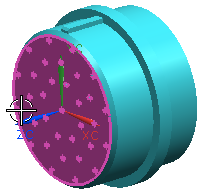
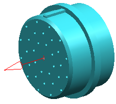
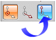
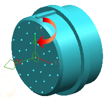

Create a fitting port on this connector
This is the port that will be attached to the port on the rotary switch device.
-
On the Routing Electrical toolbar, from the Tools Drop–down list, select Qualify Part
 .
.
-
Make sure that Route Part Type is set to Fitting.
-
From the list to the right of the Route Part Type options, select Connector.
-
From the Routing Object box, right-click the Fitting node and choose New.
You will want the fitting port to originate at the center of the front face of this part.
-
Make sure that the Filter is set to Face.
-
Select the front face of the part.

-
Click the middle mouse button to advance to Align Vector.

-
Make sure the vector arrow points away from the center of the part. If it does not, click Cycle Direction.
You need a rotation vector included on this part that points upward from the port origin towards the indexing tab at the top of the part.
-
Click Rotation Vector.

-
Make sure the Filter is set to Vector.
-
From the Vector Method list, select YC-axis.
-
Verify that the rotation vector arrow points straight up, then 点击确定。
